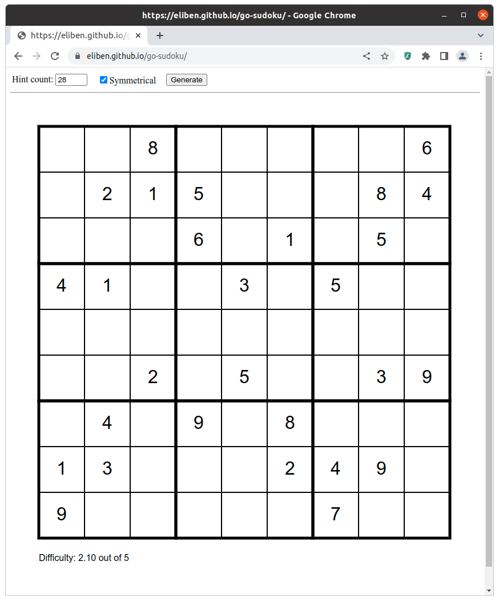

Over the summer my family has experienced a brief renaissance of interest in Sudoku, particularly as I've tried to get my kids to practice solving some non-trivial puzzles (pro tip: YouTube videos help).
Naturally, whenever a programmer encounters Sudoku it's hard to avoid thinking about automated solvers. In fact, I've already written a Sudoku solver many years ago; it converts the puzzle into a SAT problem and solves that using a standard SAT solver.
This time I wanted something more conventional, because I was also interested in generating Sudoku puzzles of varying difficulty. In addition, I wanted to experiment with running Go code in the browser via WebAssembly. The result is the go-sudoku repository; this post describes what it does and how to use it. The Go package in my repository is best seen as a toolkit for solving, generating and evaluating the difficulty of Sudoku puzzles.
Solving puzzles
I started from Peter Norvig's fantastic Solving Every Sudoku Puzzle, where he describes a constraint-satisfaction solver written in Python. The solver only employs basic row/column/block elimination as a solution strategy and then runs a recursive search when stuck. This approach is very fast for solving Sudoku puzzles that have a single solution.
Norvig's solver in Python is already quick, but my Go code is far faster still - around 100x faster in some informal measurements. One reason for this is that Go - in general - is more efficient than Python. Another is a key optimization to the core data structure; Norvig's code uses a string to represent the possible digits in a Sudoku square; e.g. if some square can have any value except 2, it's represented as the string "13456789". So there's a lot of string allocation, deallocation and linear scanning. I've replaced this by a single uint16 in Go with bitwise operations to add/remove/test digits. My solver burns through Norvig's list of "hard" Sudoku puzzles taking less than a quarter of a millisecond per puzzle on average.
I've also added a SolveAll function that finds all solutions of a given Sudoku puzzle; careful - do not run this on an empty board :-)
In the repository, you can try the solver by running the cmd/solver command.
More powerful Sudoku solving strategies
As mentioned above, my solver follows Norvig's in that it only applies the basic "first-order" constraint propagation technique to Sudoku - elimination. Expert human Sudoku solvers have many higher-order techniques at their disposal. For my solver, I experimented with implementing one of them - Naked Pairs (alternatively known as "Naked Twins").
While the implementation works (check out the ApplyTwinsStrategy function), I found that it's not very helpful for the automated solver. The backtracking search is so fast that burdening it with additional strategies makes it slower, not faster. YMMV.
Generating puzzles
Solving puzzles was just the warmump - I've done this before and just wanted the infrastructure set up. What I was really after is generating interesting Sudoku puzzles.
The approach Norvig uses is:
- Start from an empty board
- Assign random digits to random squares until a contradiction is reached (the puzzle becomes unsolvable), or a minimum count of assigned squares is reached.
Unfortunately, most puzzles produced this way will have multiple solutions; if you've done a bit of manual Sudoku-ing, you'll know that puzzles with multiple solutions suck - no one likes them.
Instead, we can start with an empty board:
Then, we solve the board using a randomized solver (a solver which randomizes the order of guessed digits it tries to assign to empty squares); this is a very quick process (tens of micro-seconds) that produces a random valid solution:
Now, we remove numbers from squares on the board one by one (in random order). At each step, we make sure that the resulting board still has a single solution. We stop when some pre-set threshold is reached - number of remaining hints, some difficulty estimate, etc.
Compared to the method used by Norvig, this approach has a powerful advantage: the produced puzzle is guaranteed to have a single solution. It also has a limitation: it's challenging to generate extremely hard puzzles with very low hint counts. That said, the puzzles it generates can certainly be hard enough for non-experts, so it's not a huge problem in practice [1].
Estimating puzzle difficulty
Estimating the difficulty of Sudoku puzzles is important if you want to generate puzzles for others to solve. The most enjoyable puzzles are just at the right level of difficulty - not too easy and not too hard. The estimation process itself is fairly complicated and heuristic, and there are academic papers written on the subject.
In the go-sudoku package the evaluation (EvaluateDifficulty) is inspired by the paper "Sudoku Puzzles Generating: from Easy to Evil" by Xiang-Sun ZHANG's research group, with some tweaks. The difficulty score is provided on a scale from 1.0 (easiest) to 5.0 (hardest). Generally, I find that puzzles with difficulty 3 or above are pretty hard!
Web interface
Since my ultimate goal was to generate printable Sudoku puzzles for my family, I wanted a simple graphical interface one could use to generate puzzles and print those that look good. Instead of mucking with GUIs or PDFs, I decided to embrace the web! This is achieved in two steps:
- The go-sudoku package can emit any Sudoku board into a SVG image.
- Using Go's wasm backend, the package is compiled to WebAssembly and attached to a simple JS/HTML frontend.
The result is quite pleasing - you can check it out online [2]; here's a screenshot:
The "Hint count" box tells the generator how many hints (non-empty squares) to leave on the board. For low counts (lower than 25 or so) it should be treated as a lower bound; the generator will often generate puzzles with slightly more hints. Also, the lower the hint count, the longer it might take to run.
Compiling my Go code to WebAssembly turned out to be surprisingly easy! If you're interested in seeing how it works, take a look at the cmd/wasm directory in the repository.
| [1] | Generating truly hard Sudoku puzzles with a single solution is a bit of an art. Typically, a long time is spent in computational search to generate a single very hard puzzle. Once we have a single puzzle with a single solution, we can transform it in many ways, keeping it valid but with a completely different "look and feel". For example, we can transpose rows and columns (within the same block); we can rotate the puzzle by 90, 180 and 270 degrees; we can permute its digits arbitrarily, and so on. In the end, a huge number of variations can be produced - all of the same difficulty. |
| [2] | Making this interface available through GitHub pages was pleasantly simple thanks to deployment via GitHub actions. Take a look in the .github/worflows directory, if you're interested in the details. |